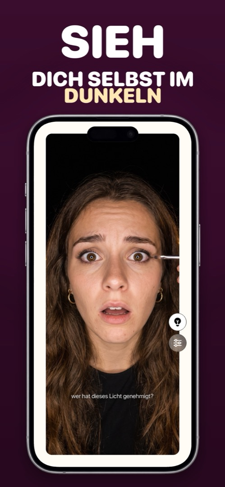

Eine Spiegel-App mit Licht — für dunkle Autos, düstere Bäder und späte Abende
Genau dann, wenn du einen Spiegel am dringendsten brauchst, ist das Licht am schlechtesten: im Auto vor dem Aussteigen, im Restaurant-WC mit einer einzigen Stimmungsbirne, im Hotelzimmer um 6 Uhr morgens, in der letzten Kinoreihe. Eine Spiegel-App mit eingebautem Licht löst das auf eine Art, die die iPhone-Taschenlampe nicht kann.
Warum die Taschenlampe nicht hilft
Der LED-Blitz des iPhones sitzt hinten, neben den Rückkameras. Die Frontkamera hat gar keine LED — bei einem Selfie im Dunkeln lässt iOS kurz den ganzen Bildschirm weiß aufblitzen (Apple nennt das Retina-Blitz). Für ein Foto funktioniert das, aber es leuchtet nur einen Sekundenbruchteil beim Auslösen. Dauerhaft anlassen, um dich anzusehen, geht nicht.
Der Bildschirm ist das Licht
Eine gute Spiegel-App nutzt denselben Trick wie der Retina-Blitz, nur dauerhaft: Die Ränder des Displays leuchten bei maximaler Helligkeit, und der Bildschirm wird zu einem kleinen Ringlicht, das direkt auf dein Gesicht zeigt. Weil das Licht die Kamera umgibt, ist es gleichmäßig und schattenfrei — näher am Schminkspiegel als an einer Handy-Taschenlampe. Eine gute App lässt dich das Licht außerdem wärmer oder kühler stellen, denn Foundation sieht unter einer warmen Birne anders aus als bei Tageslicht.
So holst du das Meiste heraus
- Abstand: 20–30 cm vom Gesicht. Näher wird das Licht hart, weiter weg fällt es schnell ab.
- Gegenlicht vermeiden: Nicht mit Fenster oder Lampe im Rücken sitzen — die Kamera belichtet auf den Hintergrund, und dein Gesicht wird dunkel.
- Helligkeit: Eine Spiegel-App sollte sie automatisch auf Maximum stellen. Im Stromsparmodus ist die Obergrenze niedriger — kurz ausschalten, wenn du jedes bisschen Licht brauchst.
- Mit Zoom kombinieren für Eyeliner, Kontaktlinsen und Zähne — Licht plus Vergrößerung ist das, was du im dunklen Bad wirklich brauchst.
So geht's in Mirrorly
Das ist Mirrorlys Ringlicht. So nutzt du es:
- Mirrorly öffnen. Die Helligkeit geht von allein auf Maximum.
- Auf die Glühbirne tippen. Der Bildschirmrand wird zum Ringlicht und beleuchtet dein Gesicht. (Erkennt Mirrorly schlechtes Licht, schlägt es das von selbst vor.)
- Einstellungen öffnen (Regler-Symbol) und die Lichttemperatur wärmer oder kühler stellen.
- Das Handy etwa eine Handlänge entfernt halten, zu dir gerichtet, ohne helle Quelle hinter dir. Nochmal auf die Glühbirne tippen, um das Licht auszuschalten.

Mirrorly kommt bald in den App Store.
Ein Vollbild-Spiegel fürs iPhone mit Ringlicht, Zoom und maximaler Helligkeit. Drei kostenlose Checks, danach ein einmaliger Kauf — kein Abo, keine gespeicherten Fotos, kein Konto, keine Werbung.